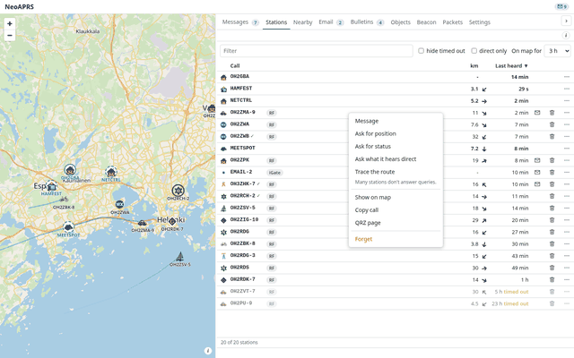
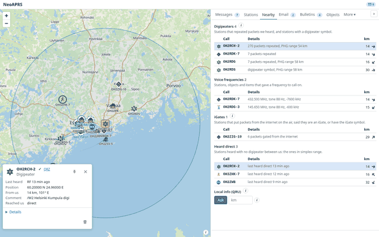
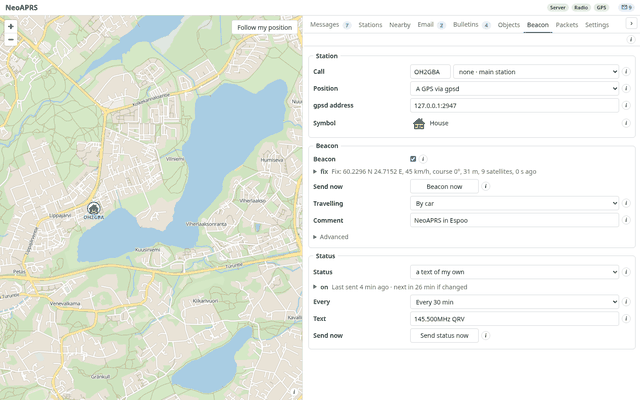
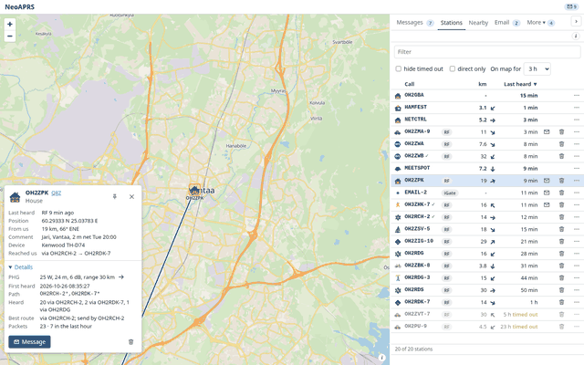
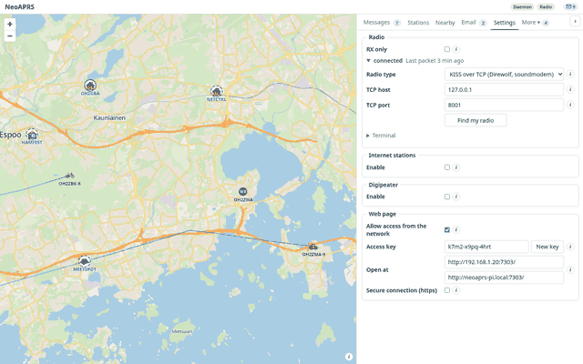
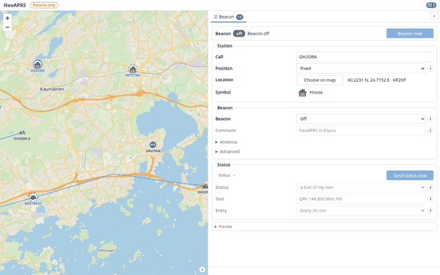
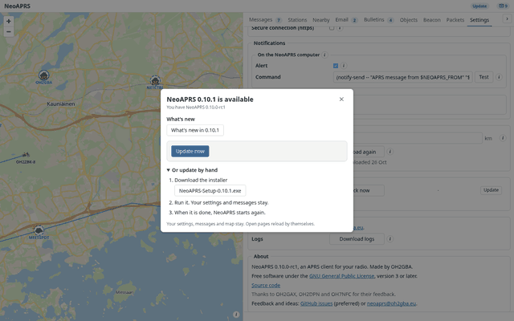
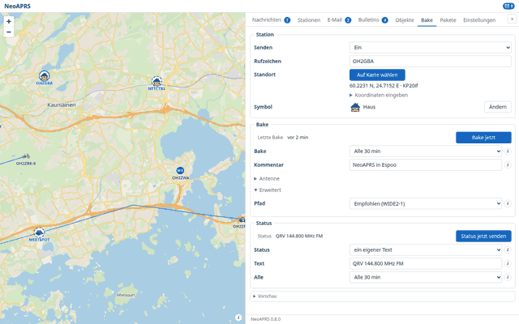
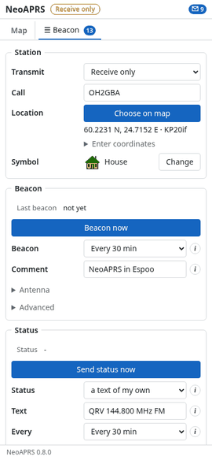

Map
Symbols, fading trails and the route of each packet on a street map kept on your disk. A station's card shows what it runs and its antenna direction.
An APRS client for a radio with a TNC: a map, messages and your beacon in a browser or a desktop app. Windows, Linux, Raspberry Pi.
Symbols, fading trails and the route of each packet on a street map kept on your disk. A station's card shows what it runs and its antenna direction.

A table with distance, bearing and when last heard; several cards open side by side. The row menu sends a message or an APRS query: position, status, heard direct, trace.

Acks, reply-acks and retries, with the delivery chain of each message, hop by hop. Email through the gateway, bulletins and group messages, alerts on the desktop and in the browser.

Readings, and 24 hour and 7 day graphs of temperature, pressure, wind and rain. Stations opened side by side share the same scales.

Digipeaters, voice frequencies, iGates and stations heard direct, nearest first; the range of the selected digipeater is drawn on the map. Frequencies, storm data and signposts are decoded, and a QRU server answers for your objects.

The beacon follows a GPS (gpsd or a serial port) and is sent by SmartBeaconing, with presets for car, bicycle, foot and boat. With no fix nothing is sent.

Objects and items of your own, placed and moved on the map and sent on the specification's schedule. A kill removes one from the air.
Position, symbol, path and status text; a change applies at once, with Undo. Beacon Off sends no automatic beacon (Beacon now still sends) while messages still work; nothing is sent until a call is set.

Run it on a Raspberry Pi and open the page from a laptop, tablet or phone, with an access key and optional https. English, Deutsch, Español, Français, Italiano, 日本語, Português.
Run the installer; no administrator rights are needed. If SmartScreen warns about an unsigned installer: More info, Run anyway.
Make the AppImage executable and run it.
$ chmod +x NeoAPRS-*-x86_64.AppImage && ./NeoAPRS-*-x86_64.AppImage
The .deb (arm64 for a Pi, amd64 for a PC) brings its own Python. Or the install script (Linux, macOS), which installs uv and NeoAPRS and starts a service.
$ sudo apt install ./neoaprs_*.deb && neoaprs service install --linger
$ curl -LsSf https://github.com/oh2gba/neoaprs/releases/latest/download/install.sh | sh
The wheel from the release, with Python 3.13 or newer.
$ uv tool install neoaprs-<version>-py3-none-any.whl
Updates: the Windows installer and the AppImage have Update now; elsewhere the update window lists the steps.
No radio at hand? This plays the sample capture as a TNC on a TCP port.
$ neoaprs replay
| Radio or TNC | Connects by |
|---|---|
| Kenwood TH-D7, TM-D700, TS-2000; TNC-2 clones (MFJ-1270B/1274/1278, TAPR) | serial, 9600 |
| Kenwood TM-D710, TH-D72 | serial or USB |
| Kenwood TH-D74, TH-D75 | USB or Bluetooth |
| Mobilinkd TNC3, TNC4 | USB, Bluetooth or Bluetooth LE |
| BTech UV-PRO, Vero VR-N76, Radioddity GA-5WB (untested) | Bluetooth |
| PicoAPRS V4 (untested) | Bluetooth, USB-C or TCP |
| LoRa APRS, CA2RXU firmware (untested) | KISS over TCP or Bluetooth LE |
| NinoTNC, TNC-Pi, TNC-X, any TNC in KISS | USB or serial |
| Kantronics KPC-3+ | RS-232 |
| Any radio with a sound-card interface (Digirig, SignaLink), through Direwolf | KISS over TCP |
| GPS receiver, for a moving station | gpsd or serial |
Bluetooth LE (ble://) is untested on a radio. Yaesu and Icom have no KISS TNC for a computer: use a sound-card interface and Direwolf. Find my radio in the setup and in Settings looks for the port (Linux, Windows, macOS). Radio guide













A made-up day on the air: apart from a few digipeaters of the sample capture, the calls are invented.